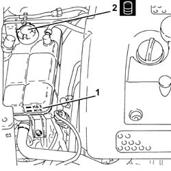
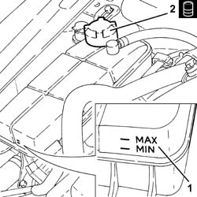
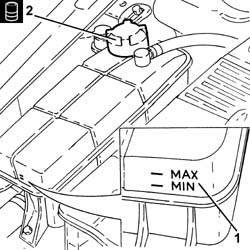

0010T21 coolant check density and top up if necessary
- Path
- Procedures > 00 MAINTENANCE > 0010 NEW UNITS AND PLANNED MAINTENANCE'. > 0010T vehicle oil and fluids > 0010T21 coolant check density and top up if necessary
- Kind
- repair procedure (removal / refitting; the operation number is the code)
- Applies to
- engines: 2.0 JTS, 3.2 V6, 1.9 JTD 16v, 2.0 JTS, 2.4 JTD 20v; all production periods
- Interactive page
- https://sloeber94.github.io/elrnDB-a156/en/#/3237408
Applies to: engines: 3.2 V6; all production periods
.
Ensure the coolant level in the reservoir is between the MIN and MAX marks visible on the reservoir.
If the level is insufficient, unscrew the coolant reservoir cap and top up with recommended coolant to the MAX mark.
 | Type | Component | Name | Qty. |
|---|---|---|---|---|
- | Fluid [l] | ENGINE COOLING CIRCUIT | Mixture 50% Paraflu11 for Alfa Romeo/distilled water | 9.2 |
Applies to: all engines; all production periods
Applies to: engines: 2.0 JTS, 2.0 JTS; all production periods
1. Ensure the coolant level in the reservoir is between the MIN and MAX marks visible on the reservoir.
2. If the level is insufficient, unscrew the coolant reservoir cap and top up with recommended coolant to the MAX mark.
| Type | Component | Name | Qty. |
|---|---|---|---|---|
2 | Fluid [l] | ENGINE COOLING CIRCUIT | Mixture 50% Paraflu11 for Alfa Romeo/distilled water | 6.9 |

Applies to: all engines; all production periods
Applies to: engines: 1.9 JTD 16v; all production periods
1. Ensure the coolant level in the reservoir is between the MIN and MAX marks visible on the reservoir.
2. If the level is insufficient, unscrew the coolant reservoir cap and top up with recommended coolant to the MAX mark.
| Type | Component | Name | Qty. |
|---|---|---|---|---|
2 | Fluid | ENGINE COOLING CIRCUIT | Mixture 50% Paraflu11 for Alfa Romeo/distilled water | 6.1 |

Applies to: all engines; all production periods
Applies to: engines: 2.4 JTD 20v; all production periods
1. Ensure the coolant level in the reservoir is between the MIN and MAX marks visible on the reservoir.
2. If the level is insufficient, unscrew the coolant reservoir cap and top up with recommended coolant to the MAX mark.
| Type | Component | Name | Qty. |
|---|---|---|---|---|
2 | Fluid [l] | ENGINE COOLING CIRCUIT | Mixture 50% Paraflu11 for Alfa Romeo/distilled water | 7.25 |
| Type | Component | Name | Qty. |
|---|---|---|---|---|
2 | Fluid [l] | ENGINE COOLING CIRCUIT | Mixture of 50% Paraflu/distilled water | 7.25 |
